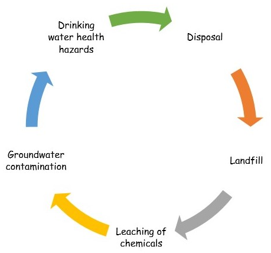
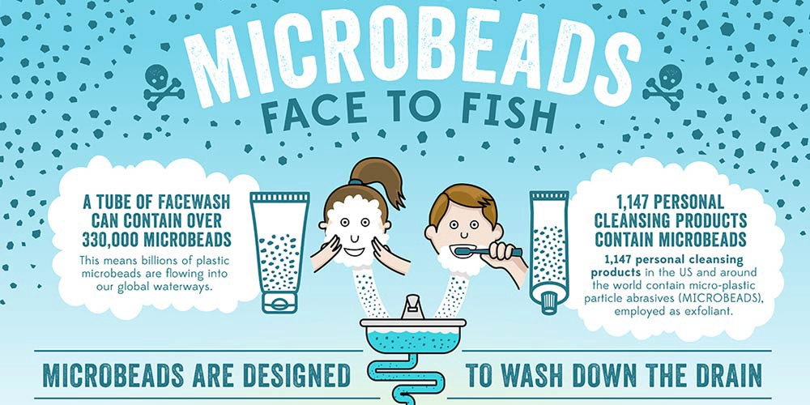

By Nandini Dixit on July 23, 2020
The transient outer beauty rejuvenates ourselves, makes a person attractive and gives confidence. It gives a new level of comfortableness, brings social recognition and increases social status of a person. Beauty business is one of the leading businesses in the world with around 532 billion dollars. A theory was proposed by Professor Juliet Shor back in the 1990s named as the “Lipstick effect” which explains how during the economic recession, sales of beauty products had increased. At the time of distressing environment, people try to indulge themselves in purchasing little luxuries for emotional lift up and one of them includes cosmetics and beauty products.
Cosmetics play an integral role in human life. Most cabinets inside a female domain are filled up with such items. An average woman uses 16 beauty products everyday which adds up to a phenomenal amount of its consumption on a global level. Despite the harmful effects of it, most people remain in disillusion about the impact of these cosmetics on their daily lives and on the environment.
These cosmetics contain chemicals which are absorbed through the skin and may lead to a plethora of problems such as allergic reactions. Additionally, most of the products contain chemicals such as Phthalate (generally found in lipsticks) and Paraben (mostly found in shampoos, deodorants), a constant application of it could even lead to cancer. In spite of their lower concentration in the formulations, long term exposures could affect the reproductive system of a person leading to endocrine disruption and infertility, etc.
But what about the environmental effects?
These products have been deteriorating the environment in many ways since decades. They have negatively impacted it via their environmentally non-hostile formulations and management techniques. Nowadays, many brands are covering “Anti-pollution ” products for skin care. The way these beauty products advertisements attract ourselves, we have forgotten to give a second thought of its repercussions on the planet. The biggest irony of these Anti-pollution products is that these themselves are the biggest polluters. The life cycle of a cosmetic product starts from extracting raw materials, manufacturing, packaging and transportation. The notorious nature of cosmetics sadly pollutes the environment and drains off natural resources in many ways. A report shown by zero waste revealed that more than 120 billion of cosmetic packaging is being produced by cosmetic industries and most of them are not recyclable. Most of these products come in plastic packaging which approximately takes hundreds of years to decompose. Along with the base packet, there are coverings, lining, sleeves, glass works, etc. in it to make it look attractive and all this sometimes comes in a single purchase. Research from Garnier has shown that around 4.5 millions of people don’t recycle bathroom products which clearly depicts the poor management of packaging waste.
Due to lack of proper recycling, these waste ends up in landfill and leaches out certain chemicals which percolates through groundwater and makes it contaminated. In India, the major source of the drinking water is ground. The water treatment plants are not equipped with the facilities to treat all types of chemicals and face limitations. This ultimately leads to the incorporation of the toxic chemicals into our body. The below figure shows the overall cycle of the process.

Not only these products contaminate the land but also get dumped-up in seas and pollutes marine life and the biogeochemical cycle. Microplastics beds used in cosmetics have shown negative impacts on the environment as they transfer in the food chain along with the biomagnification of toxins present inside which causes toxicity through sea food consumption. Many glittery products, scrubs, sunscreen, etc. contain microplastics and sometimes nanoparticles which have adverse effects on human health.

Along with land and water, these products notoriously create a negative impact on air as well. Studies have shown that products like deodorants, perfumes, hair sprays release aerosols which react with suspended particles to form ozone and other particulate matter such as PM2.5 which are respirable and can damage the lungs. A study showed that scented products generate the same amount of chemical vapours which petrochemical sources do and are known as Volatile organic carbon (VOC). These VOCs are potential carcinogens and can cause irritation in the eyes and several respiratory problems on long term exposure.
Therefore, sustainable and eco-friendly cosmetic products exerts a great need on to the markets with increasing pollution problems. We as consumers can prevent a bit of it by adopting a fundamental principle of MINIMISATION i.e., using products in limited amounts. There is no need to use 5-6 products on your hair when you can work with some good oil and shampoo. Use natural or homemade packs or scrubs. You can even do a full-facial at home by using natural products only and remove tan by making various scrubs. When so much can be done by taking simple steps, then why do we have to pollute the environment in order to look good. The survival of nature is important for us, therefore, STOP MAKING IT UGLY.